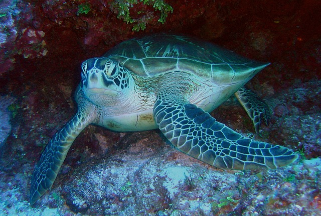
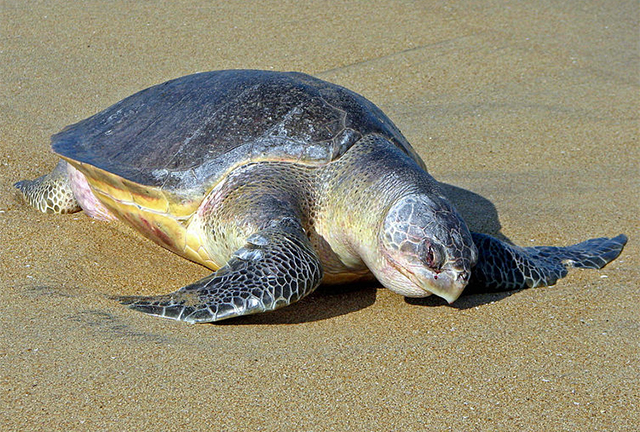

Green Sea Turtle
The green turtle is one of the largest sea turtles and the only herbivore among the different species.

Loggerhead Sea Turtle
Loggerhead turtles are named for their large heads that support powerful jaw muscles.

Leatherback Sea Turtle
Leatherbacks are the largest sea turtle species and also one of the most migratory.

Hawksbill Sea Turtle
Hawksbills are named for their narrow, pointed beak and are often found around coral reefs.

Olive Ridley Sea Turtle
The name for this sea turtle is tied to the color of its shell—an olive green hue.

Kemp's Ridley Sea Turtle
The Kemp's Ridley turtle is the world's most endangered sea turtle.